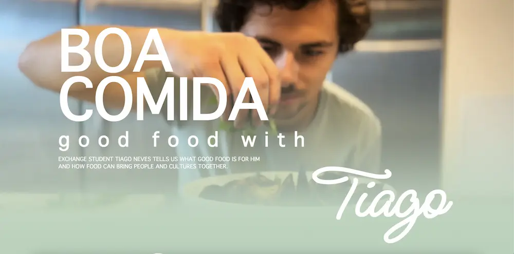

KEA
MMD
Grundlæggende Indhold
PORTFOLIOEKSAMEN
1. SEM
2022
uKirken
En alternativ kirke for unge med et ønske om sammenhold og frirum
I grundlæggende indhold skulle vi lave et redesign af en virksomheds hjemmeside for at forbedre brugeroplevelsen og dertil lave en video som skulle indgå i designet. Det var her vi fik vores første rigtige møde med gruppearbejde, da alle skulle lave én samlet opgave. Jeg stod for at kode gallerisiden og havde en hovedrolle i udførelsen og eksekveringen af videotagning, videoklipning og videoeksport i Premiere Pro.
Research, tests, moodboard, style tile og generel idégenerering blev udført af alle i plenum. Vi udførte 5-sekunders testen i klassen med vores medstuderende, og sendte en BERT-test ud til vores netværk, og til en medarbejder i virksomheden. Dette dannede grundlaget for vores designbeslutninger - på samme måde som vi i UX temaet brugte vores findings fra test og research til at underbygge vores valg.
Ca. hver anden dag har vi afholdt SCRUM møde, hvor vi har samlet trådene og fået et overblik over, hvor langt vi er nået, samt hvilke forhindringer, vi er stødt på.
Et sitemap, viser struktureren på en webside og til dels også dens funktionalitet. At lave et sitemap over uKirke gav et godt overblik over hjemmesidens funktion og hjalp os i høj grad med at organisere vores re-designede hjemmeside. Vi lavede herefter hver et udkast til et wireframe og designforslag til hver vores side. Vi valgte herefter én af vores idéer som udgangspunkt, så der var en rød tråd. Vi inkorporerede elementer fra hvert af vores designs, da alle havde gode løsninger til forskellige ting.
Video
Under planlægning af video, snakkede vi om establishment shot, master shot og b-rolls og forsøgte at lave et storyboard. Vi syntes dog, det var lidt svært at lægge sig fast på noget i denne forbindelse, da vi ikke kendte uKirken og dens indretning godt nok. Havde vi haft mere tid, ville det have været en hjælp at tage derhen dagene inden filmning, for at sikre grundig planlægning. Vi gjorde tilgengæld det, at vi besøgte kirken igen et par dage efter selve interviewet, og fik en masse gode framings og b-rolls under et af deres events - hvor der selvfølgelig blev spurgt om lov af alle til at medvirke i filmen.
Vi brugte en iPhone 13 pro som kamera, og dertil en ekstern mikrofon - Røde NT1A. Den fungerede godt, og i postproduktion satte jeg kompressor på lyden for at dæmpe rumklangen i rummet. Vi gjorde brug af motion graphics på firmalogo og lower thirds for at introducere hovedpersonerne. Vi havde problemer med farverne i videorne efter eksport af video, hvilket tilsyneladende har noget med den filmiske tilstand på iPhone at gøre. I fremtiden vil jeg nok bruge et bedre kamera hvis muligt. I et forsøg på at få almindelige farver, brugte jeg et “Adjustment layer”, hvor jeg skruede lidt ned for eksponeringen. Det er dog en færdighed, jeg endnu ikke har mestret. Jeg blev aldrig helt tilfreds med resultatet desværre.
Nuværende site // Moodboard
4 udkast til design og layout // Sitemap
Refleksion
Som forberedelse på hovedopgaven, lavede vi en video af en ung fyr med passion for madlavning. Her var min logline “Exchange student Tiago Neves tells us what good food is for him and how food brings him a little closer to home”. Musikken understøtter hans portugisiske rødder, den håndskrevne typografi med motion graphics i introen, er med til at understøtte temaet om hjemmelavet mad.
Kompetencer
- Abobe Premiere Pro
- Samarbejde
- Designudvikling
- Grid & flex